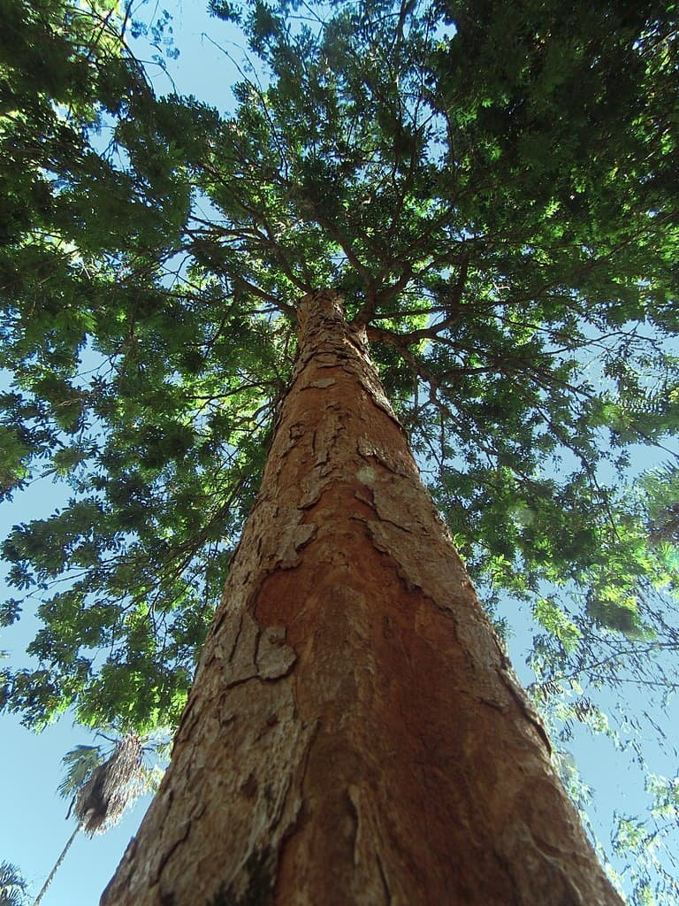

Planta 1 - Exemplo
O Pau Brasilé a árvore símbolo do país, que deu nome à nação. Foi muito explorada no período colonial para a extração de sua madeira vermelha. A espécie é encontrada principalmente no bioma da Mata Atlântica..
Status:Em Perigo de extinção
pulação estimada: Muito reduzida, com algumas estimativas apontando menos de 10.000 indivíduos em áreas isoladas.

Planta 2 - Exemplo
A planta é altamente ameaçada devido à destruição do habitat e coleta ilegal.
Status: Vulnerável
População estimada: 200 indivíduos

Planta 3 - Exemplo
Com características exclusivas, esta planta é importante para a fauna local.
Status: Criticamente em Perigo
População estimada: 20 indivíduos